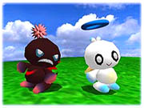
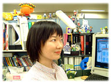

| 『 ソニック アドベンチャー２ 』 | チャオ ディレクター | 川村 幸子 |
| 『 ソニック アドベンチャー２ 』 | チャオ ディレクター | 川村 幸子 |
|
■プロフィール■ 「ソニックJAM」でゲーム業界修行。「ソニックアドベンチャー」でチャオのデザインを むりやりやらせてもら い、「チューチューロケット！」でおよそ３Dに向かないパブリシティ泣かせなワンショット キャラクターを描いて今に至る。 今回の「ソニックアドベンチャー２」ではチャオシステムのデザインとディレクションを 担当。 |
■ 前作『ソニックアドベンチャー』にてはじめて「チャオ」が登場したわけですが、
もともと「チャオ」作成のきっかけとは何だったのでしょう？

A−Lifeの仕事をやらせろ！と開発初期からしつこく訴えていました。 「NiGHTS」のナイトピアンを見てぜひA-Lifeをやってみたかったのです。 ナイトピアンって、はじめはとんがり頭の不気味な赤ん坊にしか見えなかったんですが、ひとた びナイツの世界で動き出すと、とたんにかわいいキャラクターに見えてきます。たぶん彼 らが彼らなりの意志を持って行動していて、「生きてる」感じがしたからじゃないか なー、と思います。 そもそも私がゲームの仕事をしたいと思ったのは、ゲームの中ではキャラクターが動いて くれるから。 ゲームシステムを通して、キャラクターを生かすことができると思うからです。 同じキャラクターでも、その行動によってぜんぜん見え方が変わってくると思うんです。 私にとってはA-Lifeの仕事は、やりたかったことに一番近いものでした。 |
■今回のSONICADV2の「チャオ」に関するテーマ、コンセプトとは？
 SONICADV2のテーマである「Hero&Dark」はチャオにとってもひとつのテーマでしたが、そ
れとともにチャオを考える上で一番大切にしていたことが、「見ているだけで楽しい」と
いうこと。
ただぼーっとチャオを眺めているだけで面白いものにすることでした。
SONICADV2のテーマである「Hero&Dark」はチャオにとってもひとつのテーマでしたが、そ
れとともにチャオを考える上で一番大切にしていたことが、「見ているだけで楽しい」と
いうこと。
ただぼーっとチャオを眺めているだけで面白いものにすることでした。チャオも動かなければヘンな宇宙人みたいなひとだけど、動き出すと（私が言うのもなん ですが）ほんとに可愛い。ちょうど１〜２歳のコドモが、何を考えてるのかよくわからな いけど、何かしようとしている、という感じに近い。 チャオはそれなりの意志を持って行動しています。でも彼らは人の言葉を（ＶＭ以外で は）話さないので、私たちには正確にはその欲していることがわからない。だからいろいろ な想像をしなくてはなりません。なんで泣いてるんだろう？、なにをひらめいたんだろ う？・・・と。こうやって想像して、チャオと いう存在がふくらんでいくところが、チャオの面白さだと思っています。 ・・・もちろん、チャオだからなんにも考えずにぽてぽて歩いているだけ、ってことも 多々あるのですが。 |
|
■ ゲームとして遊びの部分での最大の魅力は何ですか？（VMとの連動部分とか）
チャオを育てる目標がたくさんあります。レースモードもかなり充実しているので、全 レースを制覇するのは大変だと思います。もしかしたら１世代では難しいかもしれません ね。今回のレースは賞品ももらえるので、ますます燃えると思います。 それと、新たな要素として幼稚園もできました。おきにいりのチャオを幼稚園にかよわせ て芸達者なチャオに育てたり、チャオ診断をうければ新たな発見があるかもしれません。 もちろん、前作同様VMでのミニゲーム「おさんぽアドベンチャー２」もあります。 今度のVMでの育成はパラメータが下がることもあるので、今度の育成はひとずじなわでは いかないですよ。 |
|
■前作の『ソニックアドベンチャー』の頃に比べて、今回の『２』では、どんなところが見所になりますか？
 みどころはズバリ、チャオ自身です。 チャオをよっっっく観察してください。 チャオは大事に育てれば、ほんとにいろんなことをするようになります。 お友達を増やして大勢育てるのも面白いです。 動物パーツも可愛いものから笑えるものまで、バリエーションも豊富で楽しめると思いま す。 チャオに好かれるもよし、嫌われるのも・・・なかなか楽しいです。 チャオは発見が命なのでいろいろ試してみて下さい。 |
■ 開発において苦労したところ、楽しかったところは？
 まず前回のチャオに加えて、ヒーロー・ダーク
のチャオのデザインを考えるのに苦労しました。
まず前回のチャオに加えて、ヒーロー・ダーク
のチャオのデザインを考えるのに苦労しました。あくまでもチャオに見えなくちゃいけなく て、それでいてヒーローやダークを連想させるデザイン で、なおかつ、そこから数十タイプデザインしなければならない。考えただけで寒気がした ものですが、やってみると案外楽しかったですね。喉元過ぎればなんとやらってやつです が（笑）。 それと、ＳＡ２プロジェクトの本体である、ソニックチームＵＳＡとのやりとりも大変と いえば大変でした。 メールや電話で簡単に連絡がとれるとはいえ、時差があるし、細かい連絡ミスもあったり して。 何度「日本に帰ってきて！」と思ったことか（笑）。 でもアメリカのみんなはのびのび創ってる感じがして、アメリカに行ったのは良かったと思い ますけどね。 ・・・苦労したことばかりですね〜。 楽しくなかったわけじゃないんですよ、決して。 |
■ 開発に関して何かエピソードがあればお聞かせ下さい。
 はじめてチャオにおならされた時はさすがに傷つきました（笑）。
せっかく愛情を注いで育てているのになんて失礼な！と。
でも、自分達の創ったキャラクターが思いがけない行動をとるのは、見ていてあきないで
す。
もともとチャオはそういう存在として創ってきたつもりですが、どんどん作り手の想像を
超えてしまうのが、チャオの一番面白いところです。
はじめてチャオにおならされた時はさすがに傷つきました（笑）。
せっかく愛情を注いで育てているのになんて失礼な！と。
でも、自分達の創ったキャラクターが思いがけない行動をとるのは、見ていてあきないで
す。
もともとチャオはそういう存在として創ってきたつもりですが、どんどん作り手の想像を
超えてしまうのが、チャオの一番面白いところです。雑誌社に出したりするパブ素材撮影でも、まるでコドモの役者さんをあつかっているみた いで、チャオはちょろちょろ動き回ってぜんぜん言うこと聞いてくれない。良いショットを撮 るのがほんとに大変でした。 |
|
■ 社名でもあるソニックが生誕１０周年を迎えますが川村さんにとってソニックとは？
 会社に入った頃、ソニックはアメリカ人さんが創ったキャラクターだと信じていました （笑）。 （テイルスも女の子だと信じていました・・・） それくらいソニックは良い意味で日本限定ぽくない、ワールドワイドなキャラクターなん だと思います。 ソニックチームが世界を相手に作品を創れるのもソニックのおかげです。 看板キャラクターとしてもっともっと活躍して欲しいと思います。 |
|
■ 今後のチャオはどうなる？
チャオはいろいろなことを吸収して進化する生物です。 みなさんのご意見を吸収して、進化していくかもしれませんよ。 なんちて。 |
|
■ 御自身のクリエイターとしての今後の夢は？
たくさんの人にずーっと長く覚えていてもらえるような作品をのこせたらいいなぁと思い ます。 チャオも長く覚えていてもらえるといいなあ。 |
 ■ チャオ（ソニック）ファンのみんなへ一言。
■ チャオ（ソニック）ファンのみんなへ一言。
ここうして「ソニックアドベンチャー２」にチャオがいるのも、前作のチャオを可愛がって くれたみなさんのおかげです。 『チャオＢＢＳ』の皆さんのご意見を参考にさせていただいたことも少なくありません。 いや、ほんとに。 これからもチャオをよろしくお願いします。 ますますスピードアップしたソニックの合間には、ますます可愛くなったチャオを育てて なごんでください。 チャオ、可愛いですよー。 |